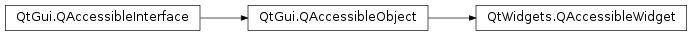

QAccessibleWidget¶
Synopsis¶
Functions¶
- def
addControllingSignal(signal) - def
parentObject() - def
widget()
Virtual functions¶
- def
actionNames() - def
doAction(actionName) - def
keyBindingsForAction(actionName)
Detailed Description¶
The
PySide2.QtWidgets.QAccessibleWidgetclass implements thePySide2.QtGui.QAccessibleInterfacefor QWidgets.This class is part of Accessibility for QWidget Applications.
This class is convenient to use as a base class for custom implementations of QAccessibleInterfaces that provide information about widget objects.
The class provides functions to retrieve the
PySide2.QtWidgets.QAccessibleWidget.parentObject()(the widget’s parent widget), and the associatedPySide2.QtWidgets.QAccessibleWidget.widget(). Controlling signals can be added withPySide2.QtWidgets.QAccessibleWidget.addControllingSignal(), and setters are provided for various aspects of the interface implementation, for example setValue(), setDescription(), setAccelerator(), and setHelp().See also
PySide2.QtGui.QAccessiblePySide2.QtGui.QAccessibleObject
-
class
PySide2.QtWidgets.QAccessibleWidget(o[, r=QAccessible.Client[, name=""]])¶ Parameters: - r –
PySide2.QtGui.QAccessible.Role - o –
PySide2.QtWidgets.QWidget - name – unicode
Creates a
PySide2.QtWidgets.QAccessibleWidgetobject for widgetw.roleandnameare optional parameters that set the object’s role and name properties.- r –
-
PySide2.QtWidgets.QAccessibleWidget.actionNames()¶ Return type: list of strings
-
PySide2.QtWidgets.QAccessibleWidget.addControllingSignal(signal)¶ Parameters: signal – unicode Registers
signalas a controlling signal.An object is a Controller to any other object connected to a controlling signal.
-
PySide2.QtWidgets.QAccessibleWidget.doAction(actionName)¶ Parameters: actionName – unicode
-
PySide2.QtWidgets.QAccessibleWidget.keyBindingsForAction(actionName)¶ Parameters: actionName – unicode Return type: list of strings
-
PySide2.QtWidgets.QAccessibleWidget.parentObject()¶ Return type: PySide2.QtCore.QObjectReturns the associated widget’s parent object, which is either the parent widget, or
qApp()for top-level widgets.
-
PySide2.QtWidgets.QAccessibleWidget.widget()¶ Return type: PySide2.QtWidgets.QWidgetReturns the associated widget.
© 2018 The Qt Company Ltd. Documentation contributions included herein are the copyrights of their respective owners. The documentation provided herein is licensed under the terms of the GNU Free Documentation License version 1.3 as published by the Free Software Foundation. Qt and respective logos are trademarks of The Qt Company Ltd. in Finland and/or other countries worldwide. All other trademarks are property of their respective owners.